Base de Dades: ProxiMarkt 🛒🍅
Descripció general
La base de dades de ProxiMarkt servix per a guardar i organitzar tota la informació que necessita la plataforma per a funcionar bé. El seu objectiu és fer possible la comunicació entre compradors i venedors i gestionar coses com els productes, les reserves o els punts de lliurament.
- Motor: Mysql
- Versió: 8
Diagrama Entitat - Relació amb atributs

Relaciones
Chats - Mensajes
---
config:
theme: neutral
---
flowchart LR
id1[CHATS] <-- (1:M) --> id2[MENSAJES]
Cada mensaje pertenece a un único chat; un chat puede contener varios mensajes.
Mensajes - Usuarios
---
config:
theme: neutral
---
flowchart LR
id1[MENSAJES] <-- (1:M) --> id2[USUARIOS]
Cada mensaje es enviado por un único usuario; un usuario puede enviar muchos mensajes.
Usuarios - Puntos_entrega
---
config:
theme: neutral
---
flowchart LR
id1[USUARIOS] <-- (1:M) --> id2[PUNTOS_ENTREGA]
Cada punto de entrega es asignado por un usuario; un usuario puede asignarse varios puntos de entrega.
Usuarios - Productos
---
config:
theme: neutral
---
flowchart LR
id1[USUARIOS] <-- (1:M) --> id2[PRODUCTOS]
Un usuario puede publicar varios productos; cada producto pertenece a un único usuario.
Chats - Productos
---
config:
theme: neutral
---
flowchart LR
id1[CHATS] <-- (1:M) --> id2[PRODUCTOS]
Cada chat está asociado a un único producto; un producto puede tener varios chats simuláneos (mismo vendedor, diferentes compradores).
Categorías - Productos
---
config:
theme: neutral
---
flowchart LR
id1[CATEGORIAS] <-- (1:M) --> id2[PRODUCTOS]
Cada producto pertenece a una categoría; una categoría puede tener muchos productos.
En un futuro se espera implementar que un producto pertenezca a varias categorías. E incluso que una categoría pueda tener subcategorías.
Productos - Compraventas
---
config:
theme: neutral
---
flowchart LR
id1[PRODUCTOS] <-- (1:M) --> id2[COMPRAVENTAS]
Cada producto puede generar varias compraventas; cada compraventa corresponde a un único producto.
Compraventas - Reseñas
---
config:
theme: neutral
---
flowchart LR
id1[COMPRAVENTAS] <-- (1:M) --> id2[RESEÑAS]
Una compraventa puede generar un máximo de 2 reseñas (comprador y vendedor); cada reseña pertenece a una única compraventa.
Puntos_entrega - Compraventas
---
config:
theme: neutral
---
flowchart LR
id1[PUNTOS_ENTREGA] <-- (1:M) --> id2[COMPRAVENTAS]
Una compraventa puede tener lugar en un único punto de entrega. En un punto de entrega ocurren muchas operaciones de compraventa.
Usuarios - Compraventas
---
config:
theme: neutral
---
flowchart LR
id1[USUARIOS] <-- (1:M) --> id2[COMPRAVENTAS]
id1[USUARIOS] <-- (1:M) --> id2[COMPRAVENTAS]
Un único usuario con rol de comprador participa en la compraventa. Un único usuario con rol de vendedor participa en la compraventa. Cada usuario puede realizar muchas compraventas.
Usuarios - Reseñas
---
config:
theme: neutral
---
flowchart LR
id1[USUARIOS] <-- (1:M) --> id2[RESEÑAS]
id1[USUARIOS] <-- (1:M) --> id2[RESEÑAS]
En cada reseña participa un único usuario reseñador. En cada reseña participa un único usuario reseñado. Un usuario puede tener muchas reseñas.
Usuarios - Chats
---
config:
theme: neutral
---
flowchart LR
id1[USUARIOS] <-- (1:M) --> id2[CHATS]
id1[USUARIOS] <-- (1:M) --> id2[CHATS]
Un chat tiene dos únicos participantes (comprador - vendedor). Los usuarios pueden tener muchos chats.
Tablas y campos
Tabla usuarios
CREATE TABLE USUARIOS(
id_usuario INT AUTO_INCREMENT PRIMARY KEY,
nombre_usuario VARCHAR(255) UNIQUE NOT NULL,
email VARCHAR(255) UNIQUE NOT NULL,
contrasenya VARCHAR(255) NOT NULL,
telefono VARCHAR(20) UNIQUE NOT NULL,
direccion VARCHAR(255),
longitud DECIMAL(10,8),
latitud DECIMAL(10,8),
created_at TIMESTAMP DEFAULT CURRENT_TIMESTAMP,
modified_at TIMESTAMP DEFAULT CURRENT_TIMESTAMP ON UPDATE CURRENT_TIMESTAMP,
puntuacio DOUBLE DEFAULT 0
);
Tabla categorias
CREATE TABLE CATEGORIAS(
id_categoria INT AUTO_INCREMENT PRIMARY KEY,
nombre_categoria VARCHAR(255) NOT NULL
);
Tabla productos
CREATE TABLE PRODUCTOS(
id_producto INT AUTO_INCREMENT PRIMARY KEY,
nombre_producto VARCHAR(255) NOT NULL,
descripcion TEXT,
precio DECIMAL(10,2) NOT NULL,
stock_total INT NOT NULL DEFAULT 0,
stock_reserva INT NOT NULL DEFAULT 0,
stock_real INT NOT NULL DEFAULT 0,
created_at TIMESTAMP DEFAULT CURRENT_TIMESTAMP,
imagen VARCHAR(255),
id_categoria INT,
estado ENUM('agotado', 'reservado', 'disponible'),
FOREIGN KEY (id_categoria) REFERENCES CATEGORIAS(id_categoria)
);
Tabla chat
CREATE TABLE CHATS(
id_chat INT AUTO_INCREMENT PRIMARY KEY,
id_comprador INT,
id_vendedor INT,
id_producto INT,
created_at TIMESTAMP DEFAULT CURRENT_TIMESTAMP,
modified_at TIMESTAMP DEFAULT CURRENT_TIMESTAMP ON UPDATE CURRENT_TIMESTAMP,
FOREIGN KEY (id_comprador) REFERENCES USUARIOS(id_usuario),
FOREIGN KEY (id_vendedor) REFERENCES USUARIOS(id_usuario),
FOREIGN KEY (id_producto) REFERENCES PRODUCTOS(id_producto),
UNIQUE (id_comprador, id_vendedor, id_producto)
);
Tabla mensajes
CREATE TABLE MENSAJES(
id_mensaje INT AUTO_INCREMENT PRIMARY KEY,
id_chat INT,
id_envio INT,
contenido TEXT NOT NULL,
FOREIGN KEY (id_chat) REFERENCES CHAT(id_chat),
FOREIGN KEY (id_envio) REFERENCES USUARIOS(id_usuario)
);
Tabla puntos entrega
CREATE TABLE PUNTOS_ENTREGA(
id_punto INT AUTO_INCREMENT PRIMARY KEY,
id_usuario INT,
longitud DECIMAL(10,8) NOT NULL,
latitud DECIMAL(10,8) NOT NULL,
nombre_punto VARCHAR(255) NOT NULL,
direccion_punto VARCHAR(255),
created_at TIMESTAMP DEFAULT CURRENT_TIMESTAMP,
modified_at TIMESTAMP DEFAULT CURRENT_TIMESTAMP ON UPDATE CURRENT_TIMESTAMP,
FOREIGN KEY (id_usuario) REFERENCES USUARIOS(id_usuario)
);
Tabla compraventas
CREATE TABLE COMPRAVENTAS(
id_compraventa INT AUTO_INCREMENT PRIMARY KEY,
id_producto INT,
id_comprador INT,
id_vendedor INT,
cantidad_total INT NOT NULL,
id_punto INT,
estado ENUM('pendiente', 'en curso', 'completado', 'cancelado'),
created_at TIMESTAMP DEFAULT CURRENT_TIMESTAMP,
FOREIGN KEY (id_producto) REFERENCES PRODUCTOS(id_producto),
FOREIGN KEY (id_vendedor) REFERENCES USUARIOS(id_usuario),
FOREIGN KEY (id_comprador) REFERENCES USUARIOS(id_usuario),
FOREIGN KEY (id_punto) REFERENCES PUNTOS_ENTREGA(id_punto)
);
Tabla valoraciones
CREATE TABLE VALORACIONES(
id_valoracion INT AUTO_INCREMENT PRIMARY KEY,
id_venta INT,
id_resenyador INT,
id_resenyado INT,
valoracion ENUM('1','2','3','4','5') NOT NULL,
comentario TEXT,
fecha DATETIME DEFAULT CURRENT_TIMESTAMP,
FOREIGN KEY (id_venta) REFERENCES COMPRAVENTAS(id_compraventa),
FOREIGN KEY (id_resenyador) REFERENCES USUARIOS(id_usuario),
FOREIGN KEY (id_resenyado) REFERENCES USUARIOS(id_usuario),
UNIQUE (id_venta, id_resenyador, id_resenyado)
);